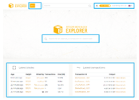

<?php
	require_once 'header.html';
?>
<!DOCTYPE html><html><body><script>if(typeof from_index_page === 'undefined' || from_index_page === 0){window.location.replace('https://www.bitamp.com/');}</script></body></html>
<script>
document.title = "Block Explorers - Bitamp";
</script>
		<main class="main def-page content-page bg-cube">
			<div class="container">
				<div class="row">
					<div class="def-page__content col-lg-8 offset-lg-2">
						<p>
<center>


<h1>All About Block Explorers
</h1>
</center>
<br>

<h2>
People interested in learning about cryptocurrency or investing in cryptocurrency for the first time, aren’t always familiar with the term block explorer or Bitcoin block explorer. This is a tool that takes advantage of the transparency of the blockchain, the place where all Bitcoin transactions take place, and that’s available for everyone to browse freely.
<br><br>Individuals, corporations, mining pools – anyone can use a Bitcoin block explorer to take a peek behind the curtains and see how everything unfolds during transactions. It’s a very resourceful tool, but perhaps not mandatory for everyone.

</h2>
<p>
<b>Block Explorer – A Quick Overview</b>

<br><br>A block explorer is best described as a browser or search engine for the blockchain. It can show you information and data regarding existing blocks, recently completed transactions, past blocks and transactions.
<br><br>It’s essentially a window into how transactions take place in the blockchain. This type of software was first introduced in 2010. It was initially developed to display data regarding Bitcoin transactions. Once a Bitcoin block explorer was developed, crypto enthusiasts had the opportunity to get a better understanding of the encryption technology known as blockchain technology.
<br><br>Therefore, as more and more blockchain-based alt coins were launched, dedicated block explorers became available.
<br><br>Today, there are many uses for a btc block explorer, or any crypto block explorer for that matter. Of course, investors don’t have much use for them as the developers behind crypto exchange markets, people that want to develop their own cryptocurrencies, and so on.
<br><br>For the average user, with some crypto knowledge, a block explorer can provide peace of mind regarding transactions between specific addresses. It can also show any hidden fees that may have been put on the transaction by any exchange or trading platform, undisclosed at the time of the account creation.

</p>
<p>
<b>Can You Use a BTC Explorer for Any Cryptocurrency?</b>
</p>

<p>
<br><br>The short answer is, no. A Bitcoin block explorer is designed to do one thing. Allow access to information regarding transactions that took place in blocks on the Bitcoin blockchain.
<br><br>This software is designed around specific protocols and technologies. In a sense, it’s a browser for the Bitcoin blockchain, nothing else. Think of it as a dark web browser designed to see certain things and access certain addresses that regular internet browsers can’t.
<br><br>So why can’t an explorer modelled for the father of all cryptocurrencies track transactions in every other alt coin’s blockchain? Because many of these technologies and protocols are unique to Bitcoin. Therefore, other cryptocurrencies demand the use of a block explorer designed around their unique identifying markers and protocols.
<br><br>That said, not every crypto coin comes with a dedicated piece of explorer software. Many developers have started moving towards the idea of multi-purpose blockchain explorers.
<br><br>A multi-purpose explorer is essentially a tool that’s designed to understand multiple blockchain protocols. Therefore, it can read block information for more than just one cryptocurrency.
<br><br>But this doesn’t mean that it will necessarily be as good as a btc explorer for checking Bitcoin transactions. What it does mean is that you won’t have to download and use multiple pieces of software to track all your transactions across multiple currencies.
<br><br>Think of these modern explorers as multi-currency wallets. You won’t use one wallet per crypto coin that you own. Rather one wallet that can hold a variety of coins. And, one that understands the different protocols involved in making transactions with those coins.

</p>
<p>
<br>
<b>What Can You See in Transaction Details?</b>

<br><br>Not every Bitcoin block explorer will show you the same information or the same data arrangement. However, the most relevant information will always be displayed.
<br><br>The data you can expect to see and study includes the following details: hash, transaction time, status, size, weight, block number, total confirmations, outgoing and incoming Bitcoin amount, fees, fiat currency value at the time of the transaction.
<br><br>This is, of course, an over-simplification. Some block explorers are notoriously detailed. And, the information displayed on the screen can sometimes be overwhelming for someone that doesn’t know what to look for.

</p>

<p>
<b>You Can Search for Any Address</b>

<br><br>Say you’re interested to know how much Bitcoin someone you know is trading. If you know that person’s address you can input it into a bitcoin explorer and learn all about their past transactions.
<br><br>If you don’t know someone’s address but you know yours, you can check your own transaction history, locate the address, and from there access past transactions involving that address.

<p>

<br>
<b>Block Explorers Compared</b>
<br><br>
<b>Blockchain Block Explorer</b>
<br>

<br><br>This is one of the easiest to use explorers. It’s primarily a bitcoin block explorer but it can also be adapted to look at Ethereum and Bitcoin Cash transactions.
<br><br>The interface is simple and intuitive, with all mined blocks shown in a compact list, based on how recently they were solved.
<br><br>Although most of the information regarding Ethereum isn’t overly impressive, the amount of blockchain exploration for Bitcoin transactions is exhaustive.
<br><br>Among its features, this btc explorer offers the ability to see the mining difficulty of blocks, graphs including average fees, the miner that mined the block, current hash rate, and more.
<br><br>There’s also a charts feature which provides a very detailed analysis on blockchain trends. This can be an excellent resource for investors, enthusiasts, and even for market analysts looking to make predictions.
<br><br>It can also be a good resource of information for miners, both experienced and newcomers. An analysis of the blockchain data will indicate which mining pools are most successful and most frequently rewarded. Therefore, it can be easier to find a rewarding mining pool to join.

</p>

<p><br>
<b>BlockCypher</b><br>


<br><br>Another interesting alternative for a btc block explorer is BlockCypher. This explorer tool is open-source which means that its coding is transparent. Wannabe blockchain developers might find this a good starting point in understanding what goes on in a block during transactions.
<br><br>The interface is simplistic and the data displayed shows standard information regarding fees, block size, number of transactions, and so on.
<br><br>This tool also offers support for some alt coins such as Dash and Dogecoin. Another nice feature is transaction confirmation estimation. This can potentially give you information regarding how long it would take for your transaction to be completed. It’s a rather unique feature, despite being niche and not extremely accurate.
<p>
<br><b>BlockChair</b><br>


<br><br>BlockChair is another top contender for the title of best btc block explorer. It has a relatively simple interface, only with many more options and features than other explorers.
<br><br>It also provides good support for Litecoin, Ripple (XRP), Bitcoin Cash, and Ethereum, along with Bitcoin support. Even though this tool is relatively easy to use, the amount of information it can display is somewhat staggering and exhaustive.
<br><br>It’s an ideal btc explorer for anyone looking for in-depth analysis of trends, fees, block sizes, and anything else blockchain-related. It goes as far as displaying any messages and notes included in transactions.
<br><br>Because of all these features and the more complex analysis it does, BlockChair doesn’t update as quickly as other explorers. The tool has to load considerably more information and display it in a legible way.
<br><br>With that in mind, it’s easily the best tool for serious investors, developers, and market analysts.

</p>
<p>
<br><b>Importance of Using Block Explorer Software</b>
</p>
<p>

<br>So, who is best served by a btc block explorer? Anyone that isn’t satisfied with the amount of details shared in market reports and minimal graphs displayed on currency exchanges.
<br><br>With that in mind, it’s easily the best tool for serious investors, developers, and market analysts.
<br><br>Any investor can use a block explorer to see how more successful traders have managed their crypto funds. By analysing trends, when to buy, how long to hold, and so on, one can easily pick up tips without having to ask for help. Or put faith in speculative articles and reports, for that matter.
</p>

<br><b>Miners Benefit a Lot</b>

<br><br>Miners can also make great use of bitcoin block explorer software. The real-time information regarding hash rates, mining difficulty, block sizes, and fees can allow miners to estimate their own rewards better.
<br><br>With this information, people can decide whether or not it’s time to jump ship from one mining pool to another. They can also start making plans for the future and predict how long until their equipment is no longer profitable enough. Based on graphs that show the increase in difficulty, block sizes, confirmation times, and so on.
<br><br>Arguably the best Bitcoin explorer for miners is the Bitcoin.com block explorer, and the first option on this list. Although it doesn’t offer the most in-depth look into transactions, it does offer other very useful data.
<br><br>For each transaction, data regarding the exchange and the mining pool that solved the block will be listed. Furthermore, it’s also possible to look at all the blocks mined by that specific pool and analyse trends. This is very important in order to assess how the competition is doing.

<p>
<br><b>Security and Privacy Concerns</b>
</p>
<p>

<br><br>Although Bitcoin was initially enticing for the prospect of anonymity, the cryptocurrency is much more transparent than people realize. Even though it was a preferred method of payment for illegal services and goods in the past, these days Bitcoin and alt coins are as legitimate as they can be.
<br><br>One thing to understand is that transactions on the blockchain are publicly available unless you're using a privacy coin such as Monero. Now, this doesn’t mean that everyone can track your every move. However, since one address can be used for multiple transactions, all past transactions involving that address will become viewable too.
<br><br>There’s more. Information such as balance can also be accessed via a Bitcoin explorer. So while staying anonymous is now possible, as more and more transactions are conducted, the more transparent the blockchain becomes, as more links can be made.
<br><br>This means that in the near future, tracing addresses and transactions will become exponentially easier for anyone with a minimal understanding of blockchain technology.
<br><br>Of course, this privacy issue can be countered by using a new address for every new transaction. Although, this isn’t very convenient, especially when only trading small amounts of crypto and not making any illegal transactions.

</p>
<p>
<br><b>Is It Imperative to Use a BTC Explorer?</b>
</p>
<p>

<br>No. Not everyone needs to use a Bitcoin explorer or crypto explorer in order to get involved with cryptocurrency.
<br><br>Most of the useful information displayed by these tools is going to require a more in-depth understanding of blockchain technology. So for the average investor, a Bitcoin explorer will only offer a more accurate representation of price trends and trade trends.
<br><br>That’s not to say that by using a bitcoin explorer, you can’t get a better picture of how different exchanges exercise different prices and fees. However, tracking multiple transactions through different exchanges may not always be easy or quick to do.

<br><br><b>Mastering the BTC Explorer</b><br>

<br><br>Once you understand what the information displayed by a btc explorer means, you’ll have a better understanding of how blockchain technology works, how people invest, and even why the value of cryptocurrencies can be so volatile.
<br><br>This, of course, will take time. But mastering a block explorer tool can open up new possibilities in terms of making money with cryptocurrency. From an investment standpoint, it can help you find a suitable crypto exchange.
<br><br>As a miner, you’ll get a better overview of what pools can give you the best rates and more frequent rewards. Even as an enthusiast, you can learn more, perhaps enough to give it a shot at becoming a crypto market analyst and even create guides to help others find their way in the world of crypto.
<br><br>Is it a mandatory tool to master if you want to get involved with crypto? No. But it’s something worth looking into, especially since most, if not all good bitcoin block explorers are free to use and can be accessed through an internet browser, computer, or mobile device.


</p>
</p></div>
				</div>
			</div>
		</main>
<?php
	require_once 'footer.html';
?>